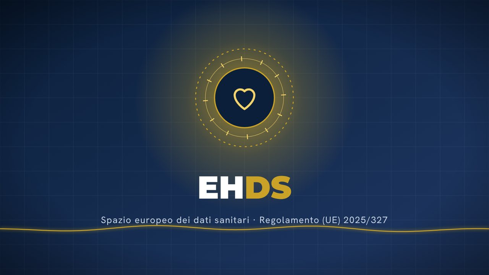

ARG
ARGARGOS › La normativa in 4 minuti › EHDS
EHDS in 4 minuti: Per ospedali e produttori
L'EHDS è il primo spazio comune di dati settoriale dell'Unione. Da dati chiusi a dati che viaggiano con il paziente. Per ospedali e produttori cambia molto.

- 0:00Pronto soccorso
- 0:13Il regolamento
- 0:31Cosa cambia
- 0:51EHDS
- 0:59Come funziona
- 1:24Dati prioritari
- 1:40Calendario
- 1:57Diritti
- 2:12In Italia
- 2:29Cosa fare
Dati chiave
- 105 articoli · in vigore dal 26 marzo 2025
- 26.3.2027 applicazione generale
- 2029 primo gruppo di dati e avvio dell'uso secondario
- 2031 secondo gruppo di dati
- 2035 ultime fasi
- Accesso immediato Il paziente vede i suoi dati
- Marcatura CE La cartella, prodotto regolato
- Formato europeo Scambio standard
Trascrizione
Testo completo della voce narrante
0:00 · Pronto soccorso
Una paziente arriva in pronto soccorso all'estero. La sua cartella è rimasta a casa. Gli esami, in un altro sistema. Le terapie, su carta. E il medico decide alla cieca.
0:13 · Il regolamento
Lo spazio europeo dei dati sanitari vuole cambiarlo. Un regolamento di 105 articoli, in vigore da marzo 2025. Dà a ognuno il controllo dei propri dati sanitari, e rende interoperabili le cartelle cliniche. Le sanzioni arrivano a venti milioni di euro.
0:31 · Cosa cambia
Per ospedali e produttori cambia molto. Il paziente vede subito i suoi dati, e chi li ha consultati. I sistemi di cartella clinica diventano prodotti con marcatura CE. Gli scambi avvengono in un formato europeo comune. Il riuso, solo con autorizzazione. E ogni accesso viene registrato.
0:51 · EHDS
L'EHDS è il primo spazio comune di dati settoriale dell'Unione. Da dati chiusi a dati che viaggiano con il paziente.
0:59 · Come funziona
Come funziona. Uso primario: il paziente consulta, integra, limita e condivide i dati, anche all'estero. Prodotto regolato: interoperabilità e registro degli accessi, con marcatura CE. Uso secondario: gli organismi di accesso autorizzano ricerca e IA. In ambienti sicuri, con dati anonimizzati. E mai per discriminare o reidentificare nessuno.
1:24 · Dati prioritari
I dati prioritari arrivano in due gruppi. Prima il profilo sanitario sintetico, la ricetta e la dispensazione elettroniche. Poi immagini e analisi di laboratorio, e le lettere di dimissione. Tutto nel formato europeo di scambio.
1:40 · Calendario
Il calendario è lungo, ma è iniziato. 26 marzo 2027: applicazione generale. 2029: il primo gruppo di dati e l'avvio dell'uso secondario. 2031: il secondo gruppo. E 2035: le ultime fasi.
1:57 · Diritti
Il paziente guadagna diritti. Accesso immediato e gratuito. Integrare e chiedere la rettifica. Portare i dati con sé, anche all'estero. Decidere chi vede cosa. E sapere chi ha consultato, e quando.
2:12 · In Italia
In Italia il Fascicolo Sanitario Elettronico due punto zero è già il punto di partenza. L'Ecosistema Dati Sanitari ne raccoglie i dati a livello nazionale. Regioni e Ministero della Salute ne condividono la governance. E l'EHDS armonizzerà le regole in tutta Europa.
2:29 · Cosa fare
Cosa fare adesso. Censire i sistemi, preparare interoperabilità e registro degli accessi, ordinare i dati per il riuso. ARGOS verifica EHDS e GDPR insieme, con test attivi sui sistemi reali e senza che i dati escano dall'ospedale. EHDS: il dato sanitario al servizio del paziente.
Domande frequenti
Che cos’è EHDS?
L'EHDS è il primo spazio comune di dati settoriale dell'Unione. Da dati chiusi a dati che viaggiano con il paziente. Lo spazio europeo dei dati sanitari vuole cambiarlo. Un regolamento di 105 articoli, in vigore da marzo 2025. Dà a ognuno il controllo dei propri dati sanitari, e rende interoperabili le cartelle cliniche. Le sanzioni arrivano a venti milioni di euro.
Che cosa richiede EHDS?
Come funziona. Uso primario: il paziente consulta, integra, limita e condivide i dati, anche all'estero. Prodotto regolato: interoperabilità e registro degli accessi, con marcatura CE. Uso secondario: gli organismi di accesso autorizzano ricerca e IA. In ambienti sicuri, con dati anonimizzati. E mai per discriminare o reidentificare nessuno.
Quali sono le date chiave?
Il calendario è lungo, ma è iniziato. 26 marzo 2027: applicazione generale. 2029: il primo gruppo di dati e l'avvio dell'uso secondario. 2031: il secondo gruppo. E 2035: le ultime fasi.
Qual è la situazione in Italia?
Per ospedali e produttori cambia molto. Il paziente vede subito i suoi dati, e chi li ha consultati. I sistemi di cartella clinica diventano prodotti con marcatura CE. Gli scambi avvengono in un formato europeo comune. Il riuso, solo con autorizzazione. E ogni accesso viene registrato. In Italia il Fascicolo Sanitario Elettronico due punto zero è già il punto di partenza. L'Ecosistema Dati Sanitari ne raccoglie i dati a livello nazionale. Regioni e Ministero della Salute ne condividono la governance. E l'EHDS armonizzerà le regole in tutta Europa.
Che cosa deve fare un’impresa adesso?
Cosa fare adesso. Censire i sistemi, preparare interoperabilità e registro degli accessi, ordinare i dati per il riuso. ARGOS verifica EHDS e GDPR insieme, con test attivi sui sistemi reali e senza che i dati escano dall'ospedale. EHDS: il dato sanitario al servizio del paziente.
Fonti ufficiali
Continua con
 Regolamento sull'IA
Regolamento sull'IARegolamento sull'IA in 4 minuti: Italia: regolamento più legge nazionale
 NIS2
NIS2NIS2 in 4 minuti: Italia: legge applicata per fasi
 Data Act e DGA
Data Act e DGAData Act e DGA in 4 minuti: Italia: obbliga, ma manca chi vigila
Voce e musica generate con intelligenza artificiale (art. 50 del regolamento sull’IA). Informazione generale, non costituisce consulenza legale; situazione a novembre 2026, secondo le schede normative di Software in a Box. Clip video su licenza Envato.
Per inserire questa presentazione in un altro sito: <iframe src="https://argos.softwareinabox.eu/it/normativa/ehds/presentacion/?embed=1" width="960" height="540" allow="autoplay; fullscreen" title="EHDS in 4 minuti: Per ospedali e produttori"></iframe> con un link a questa pagina.
Disponibile anche in: EspañolDeutschFrançaisFrançais (Belgique)NederlandsNederlands (België)PortuguêsDansk